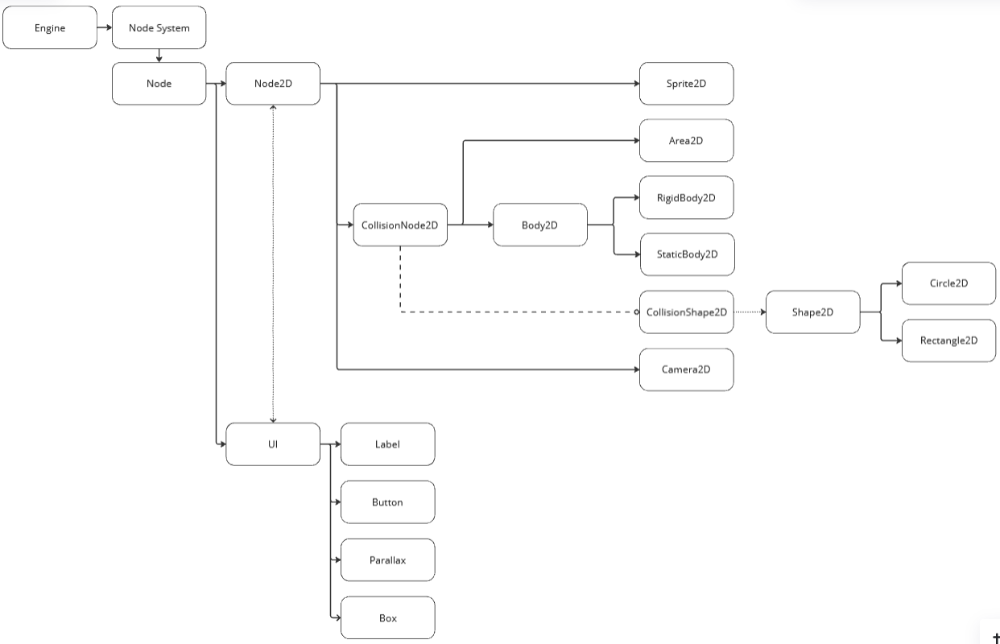

Introduction
R-TYPE is a 2D side-scrolling shoot 'em up game. The player controls a spaceship that can move horizontally and vertically. The game is divided into several levels, each with a boss at the end. The player must defeat the boss to progress to the next level. The player can collect power-ups to upgrade their ship's weapons and shields. The player must avoid or destroy enemy ships and projectiles to survive.
What we made
In the context of EPITECH, we had to implement this project with some added features.
- Fully fledged engine with a Node System
- Socket system with TCP and UDP
- LUAU Virtual Machine
The engine in itself makes 2 executables, a server and a client, the server on launch selects a game from a bunch of available games (either via launch arguments or selection if multiple games are available)
RFC
RFC: RTYPE
1. Introduction
This document describes the RTYPE networking protocol, designed for a
multiplayer game. The system comprises a server and clients, with the
server (r-type_server) managing the game state and clients (r-type_client)
rendering the game world. The protocol facilitates communication between
the server and clients over TCP and UDP sockets for efficient data
transfer.
+------------+ TCP/UDP +-----------+
| Client | <--------------------> | Server |
+------------+ +-----------+
2. Terminology
- Server: The central game server that manages the game state.
- Client: A player's game client that connects to the server.
- TCP: Transmission Control Protocol, a connection-oriented protocol.
- UDP: User Datagram Protocol, a connectionless protocol.
- Socket: A communication endpoint for sending and receiving data.
- IP Address: A unique identifier for a device on a network.
- Port Number: A number that identifies a specific process on a device.
- Packet: A unit of data sent over a network.
- Channel: A communication path between the server and clients.
- Lua: A lightweight, high-level programming language used for scripting.
3. Protocol Overview
The RTYPE protocol is designed to be lightweight and efficient for
real-time multiplayer games. It operates over TCP and UDP sockets, with TCP
used for reliable data transfer and UDP for real-time data. The protocol is
designed to handle multiple concurrent connections.
3.1 Protocol Specification
Every communication exchange between the server and clients will occur in
this order:
- Packet:
- Unsigned long: represents the size of the data.
- Integer: represents the type of the packet:
- NONE = 0 (No action will be taken, this packet is ignored)
- CONNECT = 1 (A new client is connecting to the server)
- DISCONNECT = 2 (A client is disconnecting from the server)
- NET = 3 (Message will be handled by the lua virtual machine)
- NEW_MESSAGE = 4 (Create a new channel for the NET messages)
- Char[16]: Token used to identify the client.
- Data: the actual data being sent.
The data contains serialized string or/and an integer, so the
data content is in binary. The data will be read in the same
order it was written.
+---------------------------+
| Unsigned long (Data Size) |
+---------------------------+
| Integer (Packet Type) |
+---------------------------+
| Char[16] (Token) |
+---------------------------+
| Binary Data |
+---------------------------+
3.2 Handshake
Clients establish a TCP connection to the server using the server's IP
address and port number. The server listens for incoming connections and
accepts new clients.
The client sends a "CONNECT" packet to the server to initiate the
connection. The server sends a challenge key to the client, the client must
respond with the correct answer to the challenge to be authenticated.
If the client fails to respond with the correct answer, the server will
close the connection. If the client responds with the correct answer, the
server will respond with all the available channels send in individual
"NEW_MESSAGE" packets with the string being the name of the channel and an
integer indicating the type of communication (TCP/UDP).
Then the server sends a "CONNECT" packet to the client to confirm the
connection with the data that contains "AUTHENTICATED", a char[16] ID for
the client and the name of the game.
Client Server
| ------------- "CONNECT" --------------> |
| |
| <------------ "CONNECT" --------------- | Send Challenge Key
| -------- Response to Challenge -------> | Validate Response
| |
| | If invalid, close connection
| | If valid, send channels
| <-- "NEW_MESSAGE" (New Channel Info) -- |
| <-- "NEW_MESSAGE" (New Channel Info) -- |
| | (Repeated for all channels)
| <------------- "CONNECT" -------------- | Send "AUTHENTICATED",
| | char[16] client ID, Game Name
| Connection Established |
3.3 Data Transfer
Once the connection is established, the server and client can exchange
data. The server sends game state updates to the clients over UDP for
real-time rendering. Clients can send input commands to the server over UDP
to control their game characters. TCP is used for reliable data transfer,
such as player login/logout messages.
4. Packet commands Specification
4.1 NONE
It is the default packet type, no action will be taken. Packet using
this command will be ignored and discarded.
4.2 CONNECT
The CONNECT packet is used for the handshake between the server and
clients.
4.3 DISCONNECT
The DISCONNECT packet is used to indicate that a client is
disconnecting from the server. The server will close the connection
with the client.
4.4 NET
The NET packet command is used to send messages between the server and
clients and will be handled by the lua virtual machine. The start of
the data is always a string that represents the name of the channel
where the message will be sent.
4.5 NEW_MESSAGE
Only sent from server, the packet command "NEW_MESSAGE" indicates to
create a new communication channel between client and server
with a specific name. The new channel can be either TCP or UDP.
The choice for the type of communication (TCP/UDP) is indicated
by a boolean in the "data" sent in the packet.
A channel is characterized by its name.
5. Channel
In networking, a channel refers to a communication pathway that facilitates
the transfer of data between devices.
Differents type of communication characterized by differents protocols are
used depending of the needs. The type of communication (TCP/UDP) is defined
by the engine when the channel is created by "NEW_MESSAGE".
5.1 Channel lifetime
After the creation of a channel, it's not deleted until the end of the
game.
5.2 TCP channel
Transport Control Protocol (TCP) is connection-oriented and establishes a
three-way handshake before data transfer. Packet architecture ensures
delivery in the correct order.
Used for Connexion, Handshake and all cases where data is important and
cannot be lost.
5.3 UDP channel
User Datagram Protocol (UDP) is connectionless and does not establish a
connection before sending data. Does not guarantee delivery, order, or
error checking.
Used for large transfers without precision and where data loss is
acceptable.
+--------+---------+-------------------------+----------------------------+
| Type | Ordered | Reliable Communication | Used for |
+--------+---------+-------------------------+----------------------------+
| TCP | Yes | Yes | Handshakes, Authentication |
+--------+---------+-------------------------+----------------------------+
| UDP | No | No | Real-time Game Updates |
+--------+---------+-------------------------+----------------------------+
Building
The engine is a shared library that is used by the server and the client. The server and the client are two separate executables that use the engine library. Before building the project, you need to pull the submodules with the following command:
git submodule update --init --recursive
Then you can build all the project with the following command:
./build.sh release
This command will build the engine, the server and the client in release mode. The executables will be at the root of the project.
You can also build the engine, the server and the client separately with the following commands:
./build.sh release engine
./build.sh release server
./build.sh release client
This will build the engine, the server or the client in release mode.
You can also build the project in debug mode with the following command:
./build.sh debug
or
./build.sh debug engine
./build.sh debug server
./build.sh debug client
This will build the engine, the server or the client in debug mode.
You can also build the project in profile mode with the following command:
./build.sh profile
or
./build.sh profile engine
./build.sh profile server
./build.sh profile client
This mode is used tu use a profiler to analyze the performance of the engine and the game.
Server
The server is responsible of managing the game state and the communication between the clients and the game.
When the server is started, it will start the game engine and the connection manager.
It run on the port "25777" by default but it can be changed with the --port option.
The server can use two types of connection: TCP and UDP.
The --game option is used to specify the game to run.
Actually, the server can run the R-Type game and the Pong game.
The command to run the server is:
./r-type_server
or with the port option:
./r-type_server --port [port] --game [game_name]
Client
The client runs the game and is responsible for rendering the game state and sending the input to the server.
The client is written in C++ and uses the Raylib library to render the game.
The client can be run with the following options:
--ipto specify the server IP address--portto specify the server port--colorblindnessto enable colorblindness mode
It can be run with the following command:
./r-type_client --ip [ip_address] --port [port] --colorblindness [none|protanopia|deuteranopia|tritanopia]
Networking
Node System
Introduction
What is the Entity System ?
The Entity System Engine is a lightweight 2D framework built to simplify the creation and management of entities through a Node-based hierarchy. Designed for flexibility and modularity, it provides developers with the tools to efficiently structure and manage game objects, UI, and physics in a 2D environment.
The engine is implemented in C++ for performance and exposes its
functionality through Luau, allowing developers to script and control every
aspect of the system easily.
Inspiration
This Entity System Engine is directly inspired by the one in Godot. The design pattern is inspired by the one in Garry's Mod. Godot-Documentation
Architecture Overview
The Node system is the heart of the engine. It is a block-based system designed to add functionalities more easily. This approach ensures clearer organization and helps avoid scattering during the creation of elements. It organizes entities, facilitates their manipulation and modification by adding and managing properties. Each node can :
- Inherit properties (e.g., position, rotation) from its parent.
- Add specialized behavior through extensions or child nodes.
Core Concepts
There is first a basic description of the elements, followed by a detailed explanation in References, which includes their usage and what they do. Below is a schematic of the Node System architecture.
System Graph
%%{init: {'themeVariables': {'curve': 'linear'}}}%%
graph LR;
Engine-->Node_System;
Node_System-->Node;
Node-->Node2D;
Node2D-->Sprite2D;
Node2D-->CollisionNode2D;
CollisionNode2D-->Area2D;
CollisionNode2D-->Body2D;
Body2D-->RigidBody2D;
Body2D-->StaticBody2D;
CollisionNode2D-.-o CollisionShape2D;
CollisionShape2D-.->Shape2D;
Shape2D-->Circle2D;
Shape2D-->Rectangle2D;
Node2D<-.->UI;
Node-->UI;
UI-->Label;
UI-->Button;
UI-->Parallax;
UI-->Box;
-
Node
A node is a module made up of one or more blocks, similar to an Entity System. In this Node System, the diversity of blocks is classified and organized according to defined functionalities. For example, a Node UI does not need to use a collision system. In the following, we'll look at each part of the block and its child nodes in detail.
-
Node2D
Node2D is the heart of the element management system for our video games. It contains all the methods and child nodes needed to manage:
- 2D sprites
- 2D camera
- Other objects and their collision system
The system works with functionality assignments. For example, you can create a rectangular object and decide whether or not it will conflict with other objects, and specify which ones. The objects are at least composed by a position and a size.
-
Sprite2D
This is the implementation of 2D Sprite handling, managed as a 2D object that has no physical constraints and is positioned and drawn in the scene. It is reduced as a 2D rectangle.
-
CollisionNode2D
CollisionNode2D is the starting point for managing elements with physics. This allows you to isolate, identify and simply discriminate all 2D objects other than sprites.
All CollisionNode2D dependent items can be primitively described as 2D rectangular objects with a position and size defined at the time of their creation. These entities can then be detailled into other object types, which will be described in more detail below.
-
Area2D
Area2D is a simple 2D object, dimensioned and positioned in the scene, to which a collision zone can be assigned. This object cannot be in motion.
-
Body2D
Body2D is a 2D object that can be declined into 2 other items: StaticBody2D and RigidBody2D.
As with most CollisionNode2D child nodes, Body2D and its child nodes are represented by a rectangle2D and can have a collision system.
-
StaticBody2D
It's a 2D object which, as its name suggests, is static. It is not in motion, only positioned in the scene. It can be used as a decorative element, for example.
-
RigidBody2D
This is a 2D object which, unlike StaticBody2D, is in motion. It takes an additional velocity parameter when constructed.
-
-
CollisionShape2D & Shape2D
CollisionShape2D is directly associated with Shape2D. CollisionShape2D groups together collision detection and management systems. Together with Shape2D, they also create and manage the 2D child objects described below.
Shape2D is the parent node of 2 other 2D object declinations: Rectangle2D and Circle2D. Simply, a 2D Rectangle dimensioned and positioned in the scene, and the same for the Circle. Each of these 2D objects has a Bounding Box, it's an expression of the maximum extents of a two-dimensional object (e.g. point, line, polygon) or set of objects within its x-y coordinate system. Represented by a rectangle. +Infos
Collisions between objects are verified in multiple steps. First, a collision check is performed based on the bounding box. If this check is true, a more detailed collision verification is performed directly between the objects. This approach avoids unnecessary complex calculations between shapes like rectangles and circles.
-
-
UI Nodes
UI Nodes is a 2D element management system that differs from Node2D. The difference is mainly due to the relative position of the elements. In Node2D, positions are relative to the scene, whereas UI Nodes' positions are relative to the screen.
All child elements are managed from this UI Node. It will manage global positions and color.
UI Nodes contains the elements needed to create a UI, i.e. Labels, Buttons, Boxes and finally Parallaxes, which are described below.
-
Label
Label is a UI text positioned in the screen. It can be given a font size.
-
Parallax
The parallax node is a 2D graphical element used to create a depth effect. It's a texture that can be moved by an offset or relative to a Node2D reference (for simultaneous movement). Positioned in the scene, it also has a supperposition index. 0 being the furthest away from the user.
-
Box
Box is a 2D rectangle positioned in the screen. It can be used for UI elements such as menus.
-
Games Filesystem
Each game is put in the games/ folder. The directory architecture is strict and must be followed as such:
Files/Folders in bold are required for the project to be valid.
- manifest.json
- assets/
- lua/
- index.lua entrypoint for every game
manifest.json
The manifest file is used for the server to know the presence of a valid game and retrieve basic information to send to the players on join attempts.
{
"name": "string",
"description": "string",
"max_players": 4,
"authors": ["string", "string"],
"version": 1.0
}
LUAU
The engine uses LUAU for game scripting.
Libraries
The engine makes use of multiple libraries to get the job done, some of those come from native LUAU.
They can be found in the LUAU documentation:
Custom libraries
We also implemented our own set of libraries to make controlling the engine easier.
- hook - Assign logic that needs to be triggered on specific events.
- json - JSON Parser and Serializer.
- utils - Set of functions that accomplish all sorts of stuff.
Hook library
This library is used to create events and assign logic to them.
hook.Add
Adds a hook to the global hook table.
Prototype
hook.Add(eventName: string, hookName: string, callback: (...any) -> any)
Arguments
eventName: stringName of the event.hookName: stringName of the hook.callback: (...any) -> anyCallback function that will be executed when the event is triggered.
Example
hook.Add("RType:InitServer", "hello_name", function(name: string)
print("Hello " .. name)
end)
hook.Remove
Removes a hook from the global hook table
Prototype
hook.Remove(eventName: string, hookName: string)
Arguments
eventName: stringName of the event the hook is stored in.hookName: stringName of the hook to be deleted.
Example
hook.Remove("RType:InitServer", "hello_name")
hook.Call
Calls all hooks under the eventName
Prototype
hook.Call(eventName: string, ...)
Arguments
eventName: stringName of the event under which all hooks will get triggered....Varargs, represent all arguments that will be passed to each hook's callback.
Server Luau Methods
CreatePacket
Create a new packet and register it with a given name. This method is usable by both client and server.
When the server uses it, it create a Packet and add the Packet to it's register, sends it to all the connected clients and will send it to the future clients.
When the client uses it, it only add the Packet to it's register.
Prototype
net.CreatePacket("packetName", reliable)
Arguments
string : The packet's name.
bool : Whether the packet is reliable or not.
Example
-- Creating a new packet named "PlayerData" with reliability
net.CreatePacket("PlayerData", true)
Start
Start building a packet with the given name. It must be registered before.
Prototype
net.Start("packetName")
Arguments
string: The name of the packet to start.
Example
-- Starting the "PlayerData" packet
net.Start("PlayerData")
SendToClient
Send the packet to a specific client identified by UUID. This can only be called on the server.
Prototype
net.SendToClient("clientUUID")
Arguments
string: The UUID of the client to send the packet to.
Example
-- Sending the packet to a client with a specific UUID
net.SendToClient("abc123-xyz")
SendToServer
Send the built packet from the client to the server.
Prototype
net.SendToServer()
Arguments
None
Example
-- Sending the packet from the client to the server
net.SendToServer()
Broadcast
Broadcast the built packet to all connected clients. This can only be called on the server.
Prototype
net.Broadcast()
Arguments
None
Example
-- Broadcasting the packet to all clients
net.Broadcast()
Receive
Register a callback function to handle a received packet with a specified name.
Prototype
net.Receive("packetName", callback)
Arguments
packetName(string): The name of the packet to listen for.callback(function): The function to be called when the packet is received. This function will receive two parameters:len(number): The length of the received data.ply(Player): The player who sent the packet.
Example
-- Registering a callback to handle a "PlayerData" packet
net.Receive("PlayerData", function(len, ply)
print("Received data from player: " .. ply:GetName())
-- Handle packet data
end)
-- Registering a callback to handle an Enemy destroyed
net.Receive("EnemyDestroyed", function(len, ply)
local enemyId = net.ReadInt()
local dead = net.ReadBool()
destroyEnemy(enemyId)
end)
Call
Trigger the callback registered for a specific packet name, passing the packet length and player information.
Prototype
net.Call("packetName", length, player)
Arguments
string: The name of the packet to trigger the callback for.
number: The length of the packet data.
ply (Player): The player who is calling the packet.
Example
-- Triggering the "PlayerData" packet callback
net.Call("PlayerData", 128, player) -- '128' could be the length, 'player' is the player calling the packet
Read & Write operations
All operations here must have a read and write pair The network packet works like a stack, where you write data to the top of the stack and read it from the top of the stack. This means that the order in which you write and read data is important. If you write an integer, a float, and a string in that order, you must read them in the same order to get the correct values.
WriteInt
Check if an integer value can be written to the network packet.
Prototype
WriteInt(value: number) -> void
Arguments
number: The integer value to write into the network packet.
Example
WriteInt(42)
ReadInt
Retrieve an integer value from the network packet.
Prototype
ReadInt() -> number
Arguments
None
Example
local value = ReadInt()
print("Received integer:", value)
WriteFloat
Write a floating-point value to the network packet.
Prototype
WriteFloat(value: number) -> void
Arguments
number: The floating-point value to write into the network packet.
Example
WriteFloat(3.14)
ReadFloat
Retrieve a floating-point value from the network packet.
Prototype
ReadFloat() -> number
Arguments
None
Example
local value = ReadFloat()
print("Received float:", value)
WriteString
Write a string value to the network packet.
Prototype
WriteString(value: string) -> void
Arguments
string: The string to write into the network packet.
Example
WriteString("Hello, network!")
ReadString
Retrieve a string value from the network packet.
Prototype
ReadString() -> string
Arguments
None
Example
local value = ReadString()
print("Received string:", value)
WriteBool
Write a boolean value to the network packet.
Prototype
WriteBool(value: boolean) -> void
Arguments
boolean: The boolean value to write into the network packet.
Example
WriteBool(true)
ReadBool
Retrieve a boolean value from the network packet.
Prototype
ReadBool() -> boolean
Arguments
None
Example
local value = ReadBool()
print("Received boolean:", value)
Client Luau Methods
Documentation for Luau client methods, providing functions for key events, FPS counter, color blindness modes, and window size.
The keys code is the one included in the ASCII specification.
IsKeyPressed
Check if a key is currently being pressed down.
Prototype
IsKeyPressed(key: number) -> boolean
Arguments
number: The key code to check if it is pressed.
Example
if IsKeyPressed(KEY_SPACE) then
print("Space key is pressed!")
end
IsKeyJustPressed
Check if a key was just pressed.
Prototype
IsKeyJustPressed(key: number) -> boolean
Arguments
number: The key code to check if it was just pressed.
Example
if IsKeyJustPressed(KEY_ENTER) then
print("Enter key was just pressed!")
end
IsKeyReleased
Check if a key was just released.
Prototype
IsKeyReleased(key: number) -> boolean
Arguments
number: The key code to check if it was released.
Example
if IsKeyReleased(KEY_A) then
print("The 'A' key was released!")
end
EnableFpsCounter
Enables the FPS counter, displaying the current frame rate on the screen.
Prototype
EnableFpsCounter() -> nil
Arguments
None
Example
EnableFpsCounter() -- Enables the FPS counter on the screen
DisableFpsCounter
Disables the FPS counter, removing the frame rate display from the screen.
Prototype
DisableFpsCounter() -> nil
Arguments
None
Example
DisableFpsCounter() -- Disables the FPS counter on the screen
DisableColorBlindnessShader
Disables any color blindness shader or mode applied to the game.
Prototype
DisableColorBlindnessShader() -> nil
Arguments
None
Example
DisableColorBlindnessShader() -- Disables any color blindness mode in the game
CycleColorBlindnessShader
Cycles through the available color blindness modes if any are enabled.
Prototype
CycleColorBlindnessShader() -> nil
Arguments
None
Example
CycleColorBlindnessShader() -- Cycles through different color blindness modes (if any)
WindowHeight
Returns the height of the game window (in pixels).
Prototype
WindowHeight() -> number
Arguments
None
Example
local height = WindowHeight()
print("Window Height: " .. height)
WindowWidth
Returns the width of the game window (in pixels).
Prototype
WindowWidth() -> number
Arguments
None
Example
local width = WindowWidth()
print("Window Width: " .. width)
Common
Introduction
This section contains the common luau methods for the server and client.
System Graph

Nodes
Registered Node Type & Construction Method
| Node Type | Construction Method |
|---|---|
| Node | CreateChild("Node", "name") |
| Node2D | CreateChild("Node2D", "name") |
| Sprite2D | CreateChild("Sprite2D", "name", "source") |
| Area2D | CreateChild("Area2D", "name", posX : number, posY : number, width : number, height : number) |
| RigidBody2D | CreateChild("RigidBody2D", "name", posX : number, posY : number, width : number, height : number, velocityX : number, velocityY : number) |
| StaticBody2D | CreateChild("StatiCBody2D", "name", posX : number, posY : number, width : number, height : number) |
| CollisionShape2D - Rectangle2D | CreateChild("CollisionShape2D", "name", type : "Rectangle", posX: number, posY : number, width : number, height : number) |
| CollisionShape2D - Circle2D | CreateChild("CollisionShape2D", "name", type : "Circle", posX: number, posY : number, radius : number) |
| Label | CreateChild("Label", "name", posX : number, posY : number, "text", "fontSource", fontSize : number) |
| Parallax | CreateChild("Parallax", "name", "source", scrollingVelocity : number, NodeReference) |
| Box | CreateChild("Box", "name", posX : number, posY : number, width : number, height : number) |
Node Library
-
GetName
Get the name of the Node.
Prototype
node:GetName() -> string | nilArguments
NoneExample
local node_1 = root:CreateChild("Node", "node_1") local node_name = node_1:GetName() print("Node name : " .. node_name) -- should be "node_1" -
SetName
Set or change the name of the Node.
Prototype
node:SetName(name: string) -> nilArguments
string: the name to set. Cannot be "root"Example
local node = root:CreateChild("Node", "node") print("New Node name : ", node:GetName()) -- should be "node" node:SetName("new_node_name") print("New Node name : ", node:GetName()) -- should be "new_node_name" -
GetChildren
Retrieve all child nodes of the Node.
Prototype
node:GetChildren() -> {Node} | nilArguments
NoneExample
local root = scene:GetRoot() local node_1 = root:CreateChild("Node", "node_1") local node_2 = root:CreateChild("Node", "node_2") local children = root:GetChildren() for i, child in ipairs(children) do print("Child " .. i .. ": " .. child:GetName()) -- should be "node_1" & "node_2" end -
GetChild
Retrieve a child node by its name.
Prototype
node:GetChild(name: string) -> Node | nilArguments
string: The name of the child node to retrieve.Example
local root = scene:GetRoot() local node_1 = root:CreateChild("Node", "node_1") local node_2 = root:CreateChild("Node", "node_2") local child = root:GetChild("node_1") if child then print("Found child with name: " .. child:GetName()) -- should be "node_1" else print("Child not found") end -
CreateChild
Create and add a child node to the current node. For the child references check the schema
system graphin introduction and the valid registered node types.registered_nodePrototype
node:CreateChild(type: string, name: string, + others) -> Node | nilArguments
string: The type of the child node to create. It must correspond to a valid registered node type.name: The name of the child node to create.+ others: All the additional parameters depending of the node type you want to create.Example
local root = scene:GetRoot() local child = root:CreateChild("Node") print("Created child node with type: " .. child:GetType()) -- should be "Node" -
AddChild
Prototype
node:AddChild(child: Node) -> nilArguments
Node: The node to add as a child of the current node.Example
local root = scene:GetRoot() local child = root:CreateChild("Node", "child_node") root:AddChild(child) print("Child added : " .. child:GetName()) -- should be "child_node" -
Destroy
Permanently deletes the current node and its associated resources.
Prototype
node:Destroy() -> nilArguments
NoneExample
local root = scene:GetRoot() local node_1 = root:CreateChild("Node", "node_1") node_1:Destroy() -- Trying to access node_1 after destruction will result in an error
Registered Node Type & Construction Method
| Node Type | Construction Method |
|---|---|
| Node | CreateChild("Node", "name") |
| Sprite2D | CreateChild("Sprite2D", "name", "source") |
| Parallax | CreateChild("Parallax", "name", "source", scrollingVelocity : number, NodeReference) |
| Label | CreateChild("Label", "name", posX : number, posY : number, "text", "fontSource", fontSize : number) |
| Box | CreateChild("Box", "name", posX : number, posY : number, width : number, height : number) |
| Area2D | CreateChild("Area2D", "name", posX : number, posY : number, width : number, height : number) |
| Node2D | CreateChild("Node2D", "name") |
| CollisionShape2D - Rectangle2D | CreateChild("CollisionShape2D", "name", type : "Rectangle", posX: number, posY : number, width : number, height : number) |
| CollisionShape2D - Circle2D | CreateChild("CollisionShape2D", "name", type : "Circle", posX: number, posY : number, radius : number) |
| RigidBody2D | CreateChild("RigidBody2D", "name", posX : number, posY : number, width : number, height : number, velocityX : number, velocityY : number) |
| StaticBody2D | CreateChild("StatiCBody2D", "name", posX : number, posY : number, width : number, height : number) |
Node2D Library
-
GetName
Retrieve the name of the Node2D.
Prototype
node2d:GetName() -> string | nilArguments
NoneExample
local node2d = root:CreateChild("Node2D", "node2d") local name = node2d:GetName() print("Node2D name: " .. name) -- should be "node2d" -
SetName
Set or change the name of the Node2D.
Prototype
node2d:SetName(name: string) -> nilArguments
string: the name to set. Cannot be "root"Example
local node2d = root:CreateChild("Node2D", "node2d") print("Node2D name : ", node2d:GetName()) -- should be "node2d" node2d:SetName("new_node2d_name") print("New Node2D name : ", node2d:GetName()) -- should be "new_node2d_name" -
GetChildren
Retrieve all child nodes of the Node2D.
Prototype
node2d:GetChildren() -> {Node2D} | nilArguments
NoneExample
local node2d = root:CreateChild("Node2D", "MainNode2D") local childNode1 = node2d:CreateChild("Node2D", "ChildNode2D1") local childNode2 = node2d:CreateChild("Sprite2D", "SpriteChild", "sprite1.png") local children = node2d:GetChildren() for i, child in ipairs(children) do print("Child " .. i .. ": " .. child:GetName()) -- should be "ChildNode2D1" & "SpriteChild" end -
GetChild
Retrieve a child node with the specified name from the current
Node2D.Prototype
node2d:GetChild(childName: string) -> Node2D | nilArguments
string: The name of the child node to retrieve.
Example
local node2d = root:CreateChild("Node2D", "parent_node2d") local child_1 = node2d:CreateChild("Node2D", "child_1") local child = node2d:GetChild("child_1") if child then print("Found child: " .. child:GetName()) -- should be "child_1" else print("Child not found") end -
CreateChild
Create and add a child node to the current node. For the child references check the schema
system graphin introduction and the valid registered node types.registered_nodePrototype
node:CreateChild(type: string, name: string, + others) -> Node | nilArguments
string: The type of the child node to create. It must correspond to a valid registered node type.name: The name of the child node to create.+ others: All the additional parameters depending of the node type you want to create.Example
local root = scene:GetRoot() local node2d = root:CreateChild("Node2D", "MyNode2D") print("Created Node2D: ", node2d:GetName()) -- should be "MyNode2D" -
AddChild
Add a child node to the current
Node2D.Prototype
node2d:AddChild(childNode: Node2D)Arguments
childNode(Node2D): The child node to add to this node.
Example
local parent = root:CreateChild("Node2D", "parent_node2d") local child = root:CreateChild("Node2D", "child_node2d") parent:AddChild(child) print(parent:GetChild("child_node2d"):GetName()) -- should print "child_node2d" -
GetPosition
Retrieve the position of the current
Node2D.Prototype
node2d:GetPosition() -> number, numberArguments
NoneExample
local node2d = root:CreateChild("CollisionShape2D", "shape", "Rectangle", 10, 20, 50, 50) local x, y = node2d:GetPosition() print("Position:", x, y) -- should print "Position: 10 20" -
SetPosition
Sets the position of the
Node2Din the 2D space.Prototype
node2d:SetPosition(x: number, y: number)Arguments
number: The new X-coordinate of the node.number: The new Y-coordinate of the node.
Example
local node2d = root:CreateChild("Node2D", "example_node") node2d:SetPosition(100, 200) print("Node2D position: ", node2d:GetPosition()) -- should print (100, 200) -
GetGlobalPosition
Retrieves the global position of the current
Node2D.Prototype
node2d:GetGlobalPosition() -> (number, number)Arguments
NoneExample
local node2d = scene:GetRoot():CreateChild("Node2D", "node_1") node2d:SetPosition(100, 200) local globalX, globalY = node2d:GetGlobalPosition() print("Global Position: (" .. globalX .. ", " .. globalY .. ")") -
Destroy
Permanently deletes the Node2D and its associated resources.
Prototype
node2d:Destroy() -> nilArguments
NoneExample
local node2d = root:CreateChild("Node2D", "node2d") node2d:Destroy() -- Trying to access node2d after destruction will result in an error
Registered Node Type & Construction Method
| Node Type | Construction Method |
|---|---|
| Node | CreateChild("Node", "name") |
| Sprite2D | CreateChild("Sprite2D", "name", "source") |
| Parallax | CreateChild("Parallax", "name", "source", scrollingVelocity : number, NodeReference) |
| Label | CreateChild("Label", "name", posX : number, posY : number, "text", "fontSource", fontSize : number) |
| Box | CreateChild("Box", "name", posX : number, posY : number, width : number, height : number) |
| Area2D | CreateChild("Area2D", "name", posX : number, posY : number, width : number, height : number) |
| Node2D | CreateChild("Node2D", "name") |
| CollisionShape2D - Rectangle2D | CreateChild("CollisionShape2D", "name", type : "Rectangle", posX: number, posY : number, width : number, height : number) |
| CollisionShape2D - Circle2D | CreateChild("CollisionShape2D", "name", type : "Circle", posX: number, posY : number, radius : number) |
| RigidBody2D | CreateChild("RigidBody2D", "name", posX : number, posY : number, width : number, height : number, velocityX : number, velocityY : number) |
| StaticBody2D | CreateChild("StatiCBody2D", "name", posX : number, posY : number, width : number, height : number) |
Sprite2D Library
-
GetName
Retrieve the name of the Sprite2D.
Prototype
sprite2d:GetName() -> string | nilArguments
NoneExample
local sprite2d = root:CreateChild("Sprite2D", "sprite2d", "src.png") local name = sprite2d:GetName() print("Sprite2D name: " .. name)-- should be "sprite2d" -
SetName
Set or change the name of the Sprite2D.
Prototype
sprite2d:SetName(name: string) -> nilArguments
string: the name to set. Cannot be "root"Example
local sprite2d = root:CreateChild("Sprite2D", "sprite", "sprite.png") sprite2d:SetName("new_sprite_name") print("New Sprite2D name : ", sprite2d:GetName()) -- should be "new_sprite_name" -
GetChildren
Retrieve all child nodes of the Sprite2D.
Prototype
sprite2d:GetChildren() -> {Node} | nilArguments
NoneExample
local sprite = root:CreateChild("Sprite2D", "MainSprite", "main_sprite.png") local labelChild = sprite:CreateChild("Sprite2D", "MainSprite1", "main_sprite.png") local boxChild = sprite:CreateChild("Sprite2D", "MainSprite2", "main_sprite.png") local children = sprite:GetChildren() for i, child in ipairs(children) do print("Child " .. i .. ": " .. child:GetName()) -- should be "MainSprite1" & "MainSprite2" end -
GetChild
Retrieve a child node with the specified name from the current
Sprite2D.Prototype
sprite2d:GetChild(childName: string) -> Sprite2D | nilArguments
string: The name of the child node to retrieve.
Example
local sprite2d = root:CreateChild("Sprite2D", "parent_sprite", "sprite.png") local child_1 = sprite2d:CreateChild("Sprite2D", "child_1", "child_sprite.png") local child = sprite2d:GetChild("child_1") if child then print("Found child: " .. child:GetName()) -- should be "child_1" else print("Child not found") end -
CreateChild
Create and add a
Sprite2Dnode to the current node.Prototype
node:CreateChild(type: string, name: string, source: string) -> Sprite2D | nilArguments
string: The type of the child node ("Sprite2D").string: The name of the child node.string: The source of the sprite (image file path).
Example
local root = scene:GetRoot() local sprite = root:CreateChild("Sprite2D", "PlayerSprite", "player.png") print("Created sprite node with name: ", sprite:GetName()) -- should be "PlayerSprite" -
AddChild
Add a child node to the current
Sprite2D.Prototype
sprite2d:AddChild(childNode: Sprite2D)Arguments
childNode(Sprite2D): The child node to add to this node.
Example
local parent = root:CreateChild("Sprite2D", "parent_sprite", "sprite.png") local child = root:CreateChild("Sprite2D", "child_sprite", "child_sprite.png") parent:AddChild(child) print(parent:GetChild("child_sprite"):GetName()) -- should print "child_sprite" -
GetPosition
Retrieve the position of the current
Sprite2D.Prototype
sprite2d:GetPosition() -> number, numberArguments
NoneExample
local sprite = root:CreateChild("Sprite2D", "sprite", "sprite.png") sprite:SetPosition(30, 40) local x, y = sprite:GetPosition() print("Position:", x, y) -- should print "Position: 30 40" -
SetPosition
Prototype
Sets the position of the
Sprite2Din the 2D space.Prototype
sprite2d:SetPosition(x: number, y: number)Arguments
number: The new X-coordinate of the sprite.number: The new Y-coordinate of the sprite.
Example
local sprite2d = root:CreateChild("Sprite2D", "example_sprite", "sprite.png") sprite2d:SetPosition(300, 400) print("Sprite2D position: ", sprite2d:GetPosition()) -- should print (300, 400) -
GetGlobalPosition
Retrieves the global position of the current
Sprite2D.Prototype
sprite2d:GetGlobalPosition() -> (number, number)Arguments
NoneExample
local sprite2d = scene:GetRoot():CreateChild("Sprite2D", "sprite", "sprite.png") sprite2d:SetPosition(300, 400) local globalX, globalY = sprite2d:GetGlobalPosition() print("Global Position: (" .. globalX .. ", " .. globalY .. ")") -
SetTexture
Sets the texture of the
Sprite2D.Prototype
sprite:SetTexture(texturePath: string) -> nilArguments
string: The file path to the texture to apply to theSprite2D.
Example
local sprite = scene:GetRoot():CreateChild("Sprite2D", "my_sprite", "default_texture.png") sprite:SetTexture("new_texture.png") -
SetSize
Sets the size of the
Sprite2D.Prototype
sprite:SetSize(width: number, height: number) -> nilArguments
number: The new width of the sprite.number: The new height of the sprite.
Example
local sprite = scene:GetRoot():CreateChild("Sprite2D", "my_sprite", "texture.png") sprite:SetSize(100, 150) print("Sprite size updated to width = 100, height = 150") -
SetSource
Sets the texture source rectangle of the
Sprite2D. This allows defining a sub-region of the texture to use for rendering. Change the texture and not the sprite coordonates in the scene.Prototype
sprite:SetSource(x: number, y: number, width: number, height: number) -> nilArguments
number: The X-coordinate of the top-left corner of the source rectangle.number: The Y-coordinate of the top-left corner of the source rectangle.number: The width of the source rectangle.number: The height of the source rectangle.
Example
local sprite = scene:GetRoot():CreateChild("Sprite2D", "my_sprite", "texture.png") sprite:SetSource(10, 20, 50, 60) print("") -
Destroy
Permanently deletes the Sprite2D and its associated resources.
Prototype
sprite2d:Destroy() -> nilArguments
NoneExample
local sprite2d = root:CreateChild("Sprite2D", "sprite2d", "src.png") sprite2d:Destroy() -- trying access sprite2d after destruction will result in an error
Registered Node Type & Construction Method
| Node Type | Construction Method |
|---|---|
| Node | CreateChild("Node", "name") |
| Sprite2D | CreateChild("Sprite2D", "name", "source") |
| Parallax | CreateChild("Parallax", "name", "source", scrollingVelocity : number, NodeReference) |
| Label | CreateChild("Label", "name", posX : number, posY : number, "text", "fontSource", fontSize : number) |
| Box | CreateChild("Box", "name", posX : number, posY : number, width : number, height : number) |
| Area2D | CreateChild("Area2D", "name", posX : number, posY : number, width : number, height : number) |
| Node2D | CreateChild("Node2D", "name") |
| CollisionShape2D - Rectangle2D | CreateChild("CollisionShape2D", "name", type : "Rectangle", posX: number, posY : number, width : number, height : number) |
| CollisionShape2D - Circle2D | CreateChild("CollisionShape2D", "name", type : "Circle", posX: number, posY : number, radius : number) |
| RigidBody2D | CreateChild("RigidBody2D", "name", posX : number, posY : number, width : number, height : number, velocityX : number, velocityY : number) |
| StaticBody2D | CreateChild("StatiCBody2D", "name", posX : number, posY : number, width : number, height : number) |
Area2D Library
-
GetName
Retrieve the name of the Area2D.
Prototype
area2d:GetName() -> string | nilArguments
NoneExample
local area2d = CreateChild("Area2D", "area2d", posX : number, posY : number, width : number, height : number) local name = area2d:GetName() print("Area2D name: " .. name) -- should be "area2d" -
SetName
Set or change the name of the Area2D.
Prototype
area2d:SetName(name: string) -> nilArguments
string: the name to set. Cannot be "root"Example
local area2d = root:CreateChild("Area2D", "area", 20, 20, 100, 100) area2d:SetName("new_area_name") print("New Area2D name", area2d:GetName()) -- should be "new_area_name" -
GetChildren
Retrieve all child nodes of the Area2D.
Prototype
area2d:GetChildren() -> {Node} | nilArguments
NoneExample
local area = root:CreateChild("Area2D", "MainArea", 0, 0, 200, 200) local staticBody = area:CreateChild("Area2D1", "StaticChild", 20, 20, 50, 50) local rigidBody = area:CreateChild("Area2D2", "RigidChild", 100, 100, 30, 30) local children = area:GetChildren() for i, child in ipairs(children) do print("Child " .. i .. ": " .. child:GetName()) -- should be "StaticChild" & "RigidChild" end -
GetChild
Retrieve a child node with the specified name from the current
Area2D.Prototype
area2d:GetChild(childName: string) -> Area2D | nilArguments
string: The name of the child node to retrieve.
Example
local area2d = root:CreateChild("Area2D", "parent_area", 10, 10, 100, 100) local child_1 = area2d:CreateChild("Area2D", "child_1", 20, 20, 50, 50) local child = area2d:GetChild("child_1") if child then print("Found child: " .. child:GetName()) -- should be "child_1" else print("Child not found") end -
CreateChild
Create and add an
Area2Dnode to the current node.Prototype
node:CreateChild(type: string, name: string, posX: number, posY: number, width: number, height: number) -> Area2D | nilArguments
string: The type of the child node ("Area2D").string: The name of the child node.number: The X position of the area.number: The Y position of the area.number: The width of the area.number: The height of the area.
Example
local root = scene:GetRoot() local area = root:CreateChild("Area2D", "SafeZone", 0, 0, 500, 300) print("Created area node with name: ", area:GetName()) -- should be "SafeZone" -
AddChild
Add a child node to the current
Area2D.Prototype
area2d:AddChild(childNode: Area2D)Arguments
childNode(Area2D): The child node to add to this node.
Example
local parent = root:CreateChild("Area2D", "parent_area", 10, 10, 100, 100) local child = root:CreateChild("Area2D", "child_area", 20, 20, 50, 50) parent:AddChild(child) print(parent:GetChild("child_area"):GetName()) -- should print "child_area" -
GetPosition
Retrieve the position of the current
Area2D.Prototype
area2d:GetPosition() -> number, numberArguments
NoneExample
local area = root:CreateChild("Area2D", "area", 50, 60, 100, 100) local x, y = area:GetPosition() print("Position:", x, y) -- should print "Position: 50 60" -
SetPosition
Sets the position of the
Area2Din the 2D space.Prototype
area2d:SetPosition(x: number, y: number)Arguments
number: The new X-coordinate of the area.number: The new Y-coordinate of the area.
Example
local area2d = root:CreateChild("Area2D", "example_area", 10, 10, 100, 100) area2d:SetPosition(200, 150) print("Area2D position: ", area2d:GetPosition()) -- should print (200, 150) -
GetGlobalPosition
Retrieves the global position of the current
Area2D.Prototype
area2d:GetGlobalPosition() -> (number, number)Arguments
NoneExample
local area2d = scene:GetRoot():CreateChild("Area2D", "area", 100, 200, 300, 400) area2d:SetPosition(500, 600) local globalX, globalY = area2d:GetGlobalPosition() print("Global Position: (" .. globalX .. ", " .. globalY .. ")") -
ToggleCollision
Enable or disable collision for the current
Area2Dobject.Prototype
area2d:ToggleCollision() -> voidArguments
NoneExample
local area2d = root:CreateChild("Area2D", "my_area", 20, 20, 200, 100) area2d:ToggleCollision() print("Collision enabled for Area2D") area2d:ToggleCollision() print("Collision disabled for Area2D") -
IsCollisionEnabled
Check whether collision is enabled for the
Area2Dnode.Prototype
area2d:IsCollisionEnabled() -> booleanArguments
NoneExample
local area = root:CreateChild("Area2D", "area", 10, 10, 100, 100) local isEnabled = area:IsCollisionEnabled() if isEnabled then print("Collision is enabled for this area.") else print("Collision is disabled for this area.") -- should print this end -
Collide
Check for a collision between the current
Area2Dand another node.Prototype
area2d:Collide(otherNode: Area2D) -> booleanArguments
otherNode(Area2D): The node to check for a collision with.
Example
local area1 = root:CreateChild("Area2D", "area1", 0, 0, 200, 100) local area2 = root:CreateChild("Area2D", "area2", 50, 50, 50, 50) area1:ToggleCollision() area2:ToggleCollision() if area1:Collide(area2) then print("Collision detected between area1 and area2") else print("No collision detected") end -
GetSize
Retrieve the current size (width and height) of the
Area2Dnode.Prototype
area2d:GetSize() -> width: number, height: numberArguments
NoneExample
local area2d = scene:GetRoot():CreateChild("Area2D", "area_node", 10, 10, 200, 100) local width, height = area2d:GetSize() print("Width: " .. width .. ", Height: " .. height) -- should print "Width: 200, Height: 100" -
SetSize
Set a new size (width and height) for the
Area2Dnode.Prototype
area2d:SetSize(width: number, height: number)Arguments
width(number): The new width for the node.height(number): The new height for the node.
Example
local area2d = scene:GetRoot():CreateChild("Area2D", "area_node", 10, 10, 200, 100) area2d:SetSize(300, 150) local width, height = area2d:GetSize() print("New Width: " .. width .. ", New Height: " .. height) -- should print "New Width: 300, New Height: 150" -
Destroy
Permanently deletes the Area2D and its associated resources.
Prototype
area2d:Destroy() -> nilArguments
NoneExample
local area2d = root:CreateChild("Area2D", "name", posX : number, posY : number, width : number, height : number) area2d:Destroy() -- trying access to area2d after destruction will result in an error
Registered Node Type & Construction Method
| Node Type | Construction Method |
|---|---|
| Node | CreateChild("Node", "name") |
| Sprite2D | CreateChild("Sprite2D", "name", "source") |
| Parallax | CreateChild("Parallax", "name", "source", scrollingVelocity : number, NodeReference) |
| Label | CreateChild("Label", "name", posX : number, posY : number, "text", "fontSource", fontSize : number) |
| Box | CreateChild("Box", "name", posX : number, posY : number, width : number, height : number) |
| Area2D | CreateChild("Area2D", "name", posX : number, posY : number, width : number, height : number) |
| Node2D | CreateChild("Node2D", "name") |
| CollisionShape2D - Rectangle2D | CreateChild("CollisionShape2D", "name", type : "Rectangle", posX: number, posY : number, width : number, height : number) |
| CollisionShape2D - Circle2D | CreateChild("CollisionShape2D", "name", type : "Circle", posX: number, posY : number, radius : number) |
| RigidBody2D | CreateChild("RigidBody2D", "name", posX : number, posY : number, width : number, height : number, velocityX : number, velocityY : number) |
| StaticBody2D | CreateChild("StatiCBody2D", "name", posX : number, posY : number, width : number, height : number) |
RigidBody2D Library
-
GetName
Retrieve the name of the RigidBody2D.
Prototype
rigidbody2d:GetName() -> string | nilArguments
NoneExample
local rigidbody2d = root:CreateChild("RigidBody2D", "rgbd2d", posX : number, posY : number, width : number, height : number, velocityX : number, velocityY : number) local name = rigidbody2d:GetName() print("RigidBody2D name: " .. name) -- should be "rgbd2d" -
SetName
Set or change the name of the RigidBody2D.
Prototype
rigidbody2d:SetName(name: string) -> nilArguments
string: the name to set. Cannot be "root"Example
-
GetChildren
Retrieve all child nodes of the RigidBody2D.
Prototype
rigidbody2d:GetChildren() -> {Node} | nilArguments
NoneExample
local rigidbody = root:CreateChild("RigidBody2D", "MainRigidBody", 10, 20, 40, 40, 3, 3) local collisionShape1 = rigidbody:CreateChild("RigidBody2D", "ChildCollision", "Rectangle", 15, 15, 30, 30) local collisionShape2 = rigidbody:CreateChild("RigidBody2D", "ChildArea", "Rectangle", 15, 15, 30, 30) local children = rigidbody:GetChildren() for i, child in ipairs(children) do print("Child " .. i .. ": " .. child:GetName()) -- should be "ChildCollision" & "ChildArea" end -
GetChild
Retrieve a child node with the specified name from the current
RigidBody2D.Prototype
rigidbody2d:GetChild(childName: string) -> RigidBody2D | nilArguments
childName(string): The name of the child node to retrieve.
Example
local rigidbody2d = root:CreateChild("RigidBody2D", "parent_rigidbody", 30, 30, 100, 100, 5, 5) local child_1 = rigidbody2d:CreateChild("RigidBody2D", "child_1", 50, 50, 50, 50, 2, 2) local child = rigidbody2d:GetChild("child_1") if child then print("Found child: " .. child:GetName()) -- should be "child_1" else print("Child not found") end -
CreateChild
Create and add a
RigidBody2Dnode to the current node.Prototype
node:CreateChild(type: string, name: string, posX: number, posY: number, width: number, height: number, velocityX: number, velocityY: number) -> RigidBody2D | nilArguments
string: The type of the child node ("RigidBody2D").string: The name of the child node.number: The X position of the rigid body.number: The Y position of the rigid body.number: The width of the rigid body.number: The height of the rigid body.number: The X component of the velocity.number: The Y component of the velocity.
Example
local root = scene:GetRoot() local rigidBody = root:CreateChild("RigidBody2D", "FallingBox", 50, 50, 100, 100, 0, -9.8) print("Created rigid body with name: ", rigidBody:GetName()) -- should be "FallingBox" -
AddChild
Add a child node to the current
RigidBody2D.Prototype
rigidbody2d:AddChild(childNode: RigidBody2D)Arguments
childNode(RigidBody2D): The child node to add to this node.
Example
local parent = root:CreateChild("RigidBody2D", "parent_rigidbody", 30, 30, 100, 100, 5, 5) local child = root:CreateChild("RigidBody2D", "child_rigidbody", 50, 50, 50, 50, 2, 2) parent:AddChild(child) print(parent:GetChild("child_rigidbody"):GetName()) -- should print "child_rigidbody" -
GetPosition
Retrieve the position of the current
RigidBody2D.Prototype
rigidbody2d:GetPosition() -> number, numberArguments
NoneExample
local rigidbody = root:CreateChild("RigidBody2D", "rigidbody", 70, 80, 50, 50, 5, 5) local x, y = rigidbody:GetPosition() print("Position:", x, y) -- should print "Position: 70 80" -
SetPosition
Sets the position of the
RigidBody2Din the 2D space.Prototype
rigidbody2d:SetPosition(x: number, y: number)Arguments
number: The new X-coordinate of the rigid body.number: The new Y-coordinate of the rigid body.
Example
local rigidbody2d = root:CreateChild("RigidBody2D", "example_body", 20, 20, 50, 50, 5, 5) rigidbody2d:SetPosition(400, 300) print("RigidBody2D position: ", rigidbody2d:GetPosition()) -- should print (400, 300) -
GetGlobalPosition
Retrieves the global position of the current
RigidBody2D.Prototype
rigidbody2d:GetGlobalPosition() -> (number, number)Arguments
NoneExample
local rigidbody2d = scene:GetRoot():CreateChild("RigidBody2D", "rigid_body", 150, 250, 50, 50, 10, 10) rigidbody2d:SetPosition(700, 800) local globalX, globalY = rigidbody2d:GetGlobalPosition() print("Global Position: (" .. globalX .. ", " .. globalY .. ")") -
GetVelocity
Retrieve the current velocity (X and Y components) of the
RigidBody2Dnode.Prototype
rigidbody2d:GetVelocity() -> velocityX: number, velocityY: numberArguments
NoneExample
local rigidbody = scene:GetRoot():CreateChild("RigidBody2D", "rigidbody_node", 10, 10, 50, 50, 100, 200) local velocityX, velocityY = rigidbody:GetVelocity() print("Velocity X: " .. velocityX .. ", Velocity Y: " .. velocityY) -- should print "Velocity X: 100, Velocity Y: 200" -
SetVelocity
Set the velocity (X and Y components) of the
RigidBody2Dnode.Prototype
rigidbody2d:SetVelocity(velocityX: number, velocityY: number)Arguments
number: The velocity on the X-axis.number: The velocity on the Y-axis.
Example
local rigidbody = scene:GetRoot():CreateChild("RigidBody2D", "rigidbody_node", 10, 10, 50, 50, 0, 0) rigidbody:SetVelocity(100, 200) local velocityX, velocityY = rigidbody:GetVelocity() print("Velocity X: " .. velocityX .. ", Velocity Y: " .. velocityY) -- should print "Velocity X: 100, Velocity Y: 200" -
ToggleCollision
Enable or disable collision for the current
RigidBody2Dobject.Prototype
rigidbody2d:ToggleCollision() -> voidArguments
NoneExample
local rigidbody2d = root:CreateChild("RigidBody2D", "my_rigidbody", 30, 30, 150, 75, 5, 5) rigidbody2d:ToggleCollision() print("Collision enabled for RigidBody2D") rigidbody2d:ToggleCollision() print("Collision disabled for RigidBody2D") -
IsCollisionEnabled
Check whether collision is enabled for the
RigidBody2Dnode.Prototype
rigidbody2d:IsCollisionEnabled() -> booleanArguments
NoneExample
local body = root:CreateChild("RigidBody2D", "rigid_body", 20, 20, 50, 50, 10, 10) local isEnabled = body:IsCollisionEnabled() if isEnabled then print("Collision is enabled for this rigid body.") else print("Collision is disabled for this rigid body.") -- should print this end -
Collide
Check for a collision between the current
RigidBody2Dand another node.Prototype
rigidbody2d:Collide(otherNode: RigidBody2D) -> booleanArguments
otherNode(RigidBody2D): The node to check for a collision with.
Example
local body1 = root:CreateChild("RigidBody2D", "body1", 10, 10, 100, 100, 5, 5) local body2 = root:CreateChild("RigidBody2D", "body2", 50, 50, 50, 50, -3, -3) body1:ToggleCollision() body2:ToggleCollision() if body1:Collide(body2) then print("Collision detected between body1 and body2") else print("No collision detected") end -
Destroy
Permanently deletes the RigidBody2D and its associated resources.
Prototype
rigidbody2d:Destroy() -> nilArguments
NoneExample
local rigidbody2d = root:CreateChild("RigidBody2D", "name", posX : number, posY : number, width : number, height : number, velocityX : number, velocityY : number) rigidbody2d:Destroy() -- Trying access rgbd2d after destruction will result in an error
Registered Node Type & Construction Method
| Node Type | Construction Method |
|---|---|
| Node | CreateChild("Node", "name") |
| Sprite2D | CreateChild("Sprite2D", "name", "source") |
| Parallax | CreateChild("Parallax", "name", "source", scrollingVelocity : number, NodeReference) |
| Label | CreateChild("Label", "name", posX : number, posY : number, "text", "fontSource", fontSize : number) |
| Box | CreateChild("Box", "name", posX : number, posY : number, width : number, height : number) |
| Area2D | CreateChild("Area2D", "name", posX : number, posY : number, width : number, height : number) |
| Node2D | CreateChild("Node2D", "name") |
| CollisionShape2D - Rectangle2D | CreateChild("CollisionShape2D", "name", type : "Rectangle", posX: number, posY : number, width : number, height : number) |
| CollisionShape2D - Circle2D | CreateChild("CollisionShape2D", "name", type : "Circle", posX: number, posY : number, radius : number) |
| RigidBody2D | CreateChild("RigidBody2D", "name", posX : number, posY : number, width : number, height : number, velocityX : number, velocityY : number) |
| StaticBody2D | CreateChild("StatiCBody2D", "name", posX : number, posY : number, width : number, height : number) |
StaticBody2D Library
-
GetName
Retrieve the name of the StaticBody2D.
Prototype
staticbody2d:GetName() -> string | nilArguments
NoneExample
local staticbody2d = root:CreateChild("StatiCBody2D", "stbd2d", posX : number, posY : number, width : number, height : number) local name = staticbody2d:GetName() print("StaticBody2D name: " .. name) -- should be "stbd2d" -
SetName
Set or change the name of the StaticBody2D.
Prototype
staticbody2d:SetName(name: string) -> nilArguments
string: the name to set. Cannot be "root"Example
local staticbody2d = root:CreateChild("StaticBody2D", "staticbody", 50, 50, 100, 100) staticbody2d:SetName("new_staticbody_name") print("New StaticBody2D name : ", staticbody2d:GetName()) -- should be "new_staticbody_name" -
GetChildren
Retrieve all child nodes of the StaticBody2D.
Prototype
staticbody2d:GetChildren() -> {Node} | nilArguments
NoneExample
local staticBody = root:CreateChild("StaticBody2D", "MainStaticBody", 50, 50, 100, 100) local area1 = staticBody:CreateChild("StaticBody2D", "ChildArea1", 10, 10, 40, 40) local area2 = staticBody:CreateChild("StaticBody2D", "ChildArea2", 10, 10, 50, 80) local children = staticBody:GetChildren() for i, child in ipairs(children) do print("Child " .. i .. ": " .. child:GetName()) -- should be "ChildArea1" 1 "ChildArea2" end -
GetChild
Retrieve a child node with the specified name from the current
StaticBody2D.Prototype
staticbody2d:GetChild(childName: string) -> StaticBody2D | nilArguments
childName(string): The name of the child node to retrieve.
Example
local staticbody2d = root:CreateChild("StaticBody2D", "parent_staticbody", 20, 20, 100, 100) local child_1 = staticbody2d:CreateChild("StaticBody2D", "child_1", 40, 40, 50, 50) local child = staticbody2d:GetChild("child_1") if child then print("Found child: " .. child:GetName()) -- should be "child_1" else print("Child not found") end -
CreateChild
Create and add a
StaticBody2Dnode to the current node.Prototype
node:CreateChild(type: string, name: string, posX: number, posY: number, width: number, height: number) -> StaticBody2D | nilArguments
string: The type of the child node ("StaticBody2D").string: The name of the child node.number: The X position of the static body.number: The Y position of the static body.number: The width of the static body.number: The height of the static body.
Example
local root = scene:GetRoot() local staticBody = root:CreateChild("StaticBody2D", "Ground", 0, 0, 800, 50) print("Created static body with name: ", staticBody:GetName()) -- should be "Ground" -
AddChild
Add a child node to the current
StaticBody2D.Prototype
staticbody2d:AddChild(childNode: StaticBody2D)Arguments
childNode(StaticBody2D): The child node to add to this node.
Example
local parent = root:CreateChild("StaticBody2D", "parent_staticbody", 20, 20, 100, 100) local child = root:CreateChild("StaticBody2D", "child_staticbody", 40, 40, 50, 50) parent:AddChild(child) print(parent:GetChild("child_staticbody"):GetName()) -- should print "child_staticbody" -
GetPosition
Retrieve the position of the current
StaticBody2D.Prototype
staticbody2d:GetPosition() -> number, numberArguments
NoneExample
local staticbody = root:CreateChild("StaticBody2D", "staticbody", 90, 100, 50, 50) local x, y = staticbody:GetPosition() print("Position:", x, y) -- should print "Position: 90 100" -
SetPosition
Sets the position of the
StaticBody2Din the 2D space.Prototype
staticbody2d:SetPosition(x: number, y: number)Arguments
number: The new X-coordinate of the static body.number: The new Y-coordinate of the static body.
Example
local staticbody2d = root:CreateChild("StaticBody2D", "staticbody", 10, 10, 100, 50) staticbody2d:SetPosition(250, 250) print("StaticBody2D position: ", staticbody2d:GetPosition()) -- should print (250, 250) -
GetGlobalPosition
Retrieves the global position of the current
StaticBody2D.Prototype
staticbody2d:GetGlobalPosition() -> (number, number)Arguments
NoneExample
local staticbody2d = scene:GetRoot():CreateChild("StaticBody2D", "static_body", 50, 100, 200, 150) staticbody2d:SetPosition(400, 500) local globalX, globalY = staticbody2d:GetGlobalPosition() print("Global Position: (" .. globalX .. ", " .. globalY .. ")") -
ToggleCollision
Enable or disable collision for the current
StaticBody2Dobject.Prototype
staticbody2d:ToggleCollision() -> voidArguments
NoneExample
local staticbody2d = root:CreateChild("StaticBody2D", "my_staticbody", 50, 50, 300, 150) staticbody2d:ToggleCollision() print("Collision enabled for StaticBody2D") staticbody2d:ToggleCollision() print("Collision disabled for StaticBody2D") -
IsCollisionEnabled
Check whether collision is enabled for the
StaticBody2Dnode.Prototype
staticbody2d:IsCollisionEnabled() -> booleanArguments
NoneExample
local staticBody = root:CreateChild("StaticBody2D", "static_body", 30, 30, 200, 100) local isEnabled = staticBody:IsCollisionEnabled() if isEnabled then print("Collision is enabled for this static body.") else print("Collision is disabled for this static body.") -- should print this end -
Collide
Check for a collision between the current
StaticBody2Dand another node.Prototype
staticbody2d:Collide(otherNode: StaticBody2D) -> booleanArguments
otherNode(StaticBody2D): The node to check for a collision with.
Example
local static1 = root:CreateChild("StaticBody2D", "static1", 0, 0, 100, 100) local static2 = root:CreateChild("StaticBody2D", "static2", 50, 50, 50, 50) static1:ToggleCollision() static2:ToggleCollision() if static1:Collide(static2) then print("Collision detected between static1 and static2") else print("No collision detected") end -
Destroy
Permanently deletes the StaticBody2D and its associated resources.
Prototype
staticbody2d:Destroy() -> nilArguments
NoneExample
local staticbody2d = root:CreateChild("StatiCBody2D", "name", posX : number, posY : number, width : number, height : number) staticbody2d:Destroy() -- Trying access stbd2d after destruction will result in an error
Registered Node Type & Construction Method
| Node Type | Construction Method |
|---|---|
| Node | CreateChild("Node", "name") |
| Sprite2D | CreateChild("Sprite2D", "name", "source") |
| Parallax | CreateChild("Parallax", "name", "source", scrollingVelocity : number, NodeReference) |
| Label | CreateChild("Label", "name", posX : number, posY : number, "text", "fontSource", fontSize : number) |
| Box | CreateChild("Box", "name", posX : number, posY : number, width : number, height : number) |
| Area2D | CreateChild("Area2D", "name", posX : number, posY : number, width : number, height : number) |
| Node2D | CreateChild("Node2D", "name") |
| CollisionShape2D - Rectangle2D | CreateChild("CollisionShape2D", "name", type : "Rectangle", posX: number, posY : number, width : number, height : number) |
| CollisionShape2D - Circle2D | CreateChild("CollisionShape2D", "name", type : "Circle", posX: number, posY : number, radius : number) |
| RigidBody2D | CreateChild("RigidBody2D", "name", posX : number, posY : number, width : number, height : number, velocityX : number, velocityY : number) |
| StaticBody2D | CreateChild("StatiCBody2D", "name", posX : number, posY : number, width : number, height : number) |
CollisionShape2D Library
-
GetName
Retrieve the name of the CollisionShape2D.
Prototype
collisionshape2d:GetName() -> string | nilArguments
NoneExample
local collisionshape2d = root:CreateChild("CollisionShape2D", "clshape2d", type : "Rectangle", posX: number, posY : number, width : number, height : number) local name = collisionshape2d:GetName() print("CollisionShape2D name: " .. name) -- should be "clshape2d" -
SetName
Set or change the name of the CollisionShape2D.
Prototype
collisionshape2d:SetName(name: string) -> nilArguments
string: the name to set. Cannot be "root"Example
local collisionshape2d = root:CreateChild("CollisionShape2D", "collisionshape", "Rectangle", 10, 10, 50, 50) collisionshape2d:SetName("new_collisionshape_name") print("New CollisionShape2D name : ", collisionshape2d:GetName()) -- should be "new_collisionshape_name" -
GetChildren
Retrieve all child nodes of the CollisionShape2D.
Prototype
collisionshape2d:GetChildren() -> {Node} | nilArguments
NoneExample
local root = scene:GetRoot() local collisionCircle = root:CreateChild("CollisionShape2D", "PlayerCollider", "Circle", 100, 100, 25) print("Created collision shape with name: ", collisionCircle:GetName()) -- should be "PlayerCollider" -
GetChild
Retrieve a child node with the specified name from the current
CollisionShape2D.Prototype
collisionshape2d:GetChild(childName: string) -> CollisionShape2D | nilArguments
string: The name of the child node to retrieve.
Example
local collisionshape2d = root:CreateChild("CollisionShape2D", "parent_shape", "Rectangle", 0, 0, 100, 100) local child_1 = collisionshape2d:CreateChild("CollisionShape2D", "child_1", "Circle", 50, 50, 20) local child = collisionshape2d:GetChild("child_1") if child then print("Found child: " .. child:GetName()) -- should be "child_1" else print("Child not found") end -
CreateChild
Create and add a child node to the current node. For the child references check the schema graph and the valid registered node types.registered_node
Prototype
node:CreateChild(type: string, name: string, + others) -> Node | nilArguments
string: The type of the child node to create. It must correspond to a valid registered node type.name: The name of the child node to create.+ others: All the additional parameters depending of the node type you want to create.Example
local root = scene:GetRoot() local collisionCircle = root:CreateChild("CollisionShape2D", "PlayerCollider", "Circle", 100, 100, 25) print("Created collision shape with name: ", collisionCircle:GetName()) -- should be "PlayerCollider" -
AddChild
Add a child node to the current
CollisionShape2D.Prototype
collisionshape2d:AddChild(childNode: CollisionShape2D)Arguments
childNode(CollisionShape2D): The child node to add to this node.
Example
local parent = root:CreateChild("CollisionShape2D", "parent_shape", "Rectangle", 0, 0, 100, 100) local child = root:CreateChild("CollisionShape2D", "child_shape", "Circle", 50, 50, 20) parent:AddChild(child) print(parent:GetChild("child_shape"):GetName()) -- should print "child_shape" -
GetPosition
Retrieve the position of the current
CollisionShape2D.Prototype
collisionshape2d:GetPosition() -> number, numberArguments
NoneExample
local shape = root:CreateChild("CollisionShape2D", "shape", "Circle", 15, 25, 50) local x, y = shape:GetPosition() print("Position:", x, y) -- should print "Position: 15 25" -
SetPosition
Sets the position of the
CollisionShape2Din the 2D space.Prototype
collisionshape2d:SetPosition(x: number, y: number)Arguments
number: The new X-coordinate of the collision shape.number: The new Y-coordinate of the collision shape.
Example
local collisionshape = root:CreateChild("CollisionShape2D", "example_shape", "Rectangle", 0, 0, 100, 100) collisionshape:SetPosition(50, 50) print("CollisionShape2D position: ", collisionshape:GetPosition()) -- should print (50, 50) -
GetGlobalPosition
Retrieves the global position of the current
CollisionShape2D.Prototype
collisionshape2d:GetGlobalPosition() -> (number, number)Arguments
NoneExample
local collisionshape2d = scene:GetRoot():CreateChild("CollisionShape2D", "collider", "Rectangle", 50, 50, 100, 100) collisionshape2d:SetPosition(200, 150) local globalX, globalY = collisionshape2d:GetGlobalPosition() print("Global Position: (" .. globalX .. ", " .. globalY .. ")") -
GetBoundingBox
Retrieve the bounding box of the current
CollisionShape2DRectangle & Circle.Prototype
collisionShape:GetBoundingBox() -> number, number, number, numberArguments
None
Example
local rectangleShape = root:CreateChild("CollisionShape2D", "rectangle", "Rectangle", 0, 0, 100, 50) local x, y, width, height = rectangleShape:GetBoundingBox()local circleShape = root:CreateChild("CollisionShape2D", "circle", "Circle", 50, 50, 25) local x, y, width, height = circleShape:GetBoundingBox() -
ToggleCollision
Enable or disable collision for the current
CollisionShape2Dobject.Prototype
collisionshape2d:ToggleCollision() -> voidArguments
NoneExample
local collisionshape = root:CreateChild("CollisionShape2D", "my_shape", "Rectangle", 10, 10, 100, 50) collisionshape:ToggleCollision() print("Collision enabled for CollisionShape2D") collisionshape:ToggleCollision() print("Collision disabled for CollisionShape2D") -
IsCollisionEnabled
Check whether collision is enabled for the
CollisionShape2Dnode.Prototype
collisionshape2d:IsCollisionEnabled() -> booleanArguments
NoneExample
local shape = root:CreateChild("CollisionShape2D", "shape", "Rectangle", 0, 0, 100, 100) local isEnabled = shape:IsCollisionEnabled() if isEnabled then print("Collision is enabled for this shape.") else print("Collision is disabled for this shape.") -- should print this end -
Collide
Check for a collision between the current
CollisionShape2Dand another node.Prototype
collisionshape2d:Collide(otherNode: CollisionShape2D) -> booleanArguments
otherNode(CollisionShape2D): The node to check for a collision with.
Example
local shape1 = root:CreateChild("CollisionShape2D", "shape1", "Rectangle", 0, 0, 100, 100) local shape2 = root:CreateChild("CollisionShape2D", "shape2", "Circle", 50, 50, 20) shape1:ToggleCollision() shape2:ToggleCollision() if shape1:Collide(shape2) then print("Collision detected between shape1 and shape2") else print("No collision detected") end -
Destroy
Permanently deletes the CollisionShape2D and its associated resources.
Prototype
collisionshape2d:Destroy() -> nilArguments
NoneExample
local collisionshape2d = root:CreateChild("CollisionShape2D", "clshape2d", type : "Rectangle", posX: number, posY : number, width : number, height : number) collisionshape2d:Destroy() -- Trying access collisionshape2d after destruction will result in an error
Registered Node Type & Construction Method
| Node Type | Construction Method |
|---|---|
| Node | CreateChild("Node", "name") |
| Sprite2D | CreateChild("Sprite2D", "name", "source") |
| Parallax | CreateChild("Parallax", "name", "source", scrollingVelocity : number, NodeReference) |
| Label | CreateChild("Label", "name", posX : number, posY : number, "text", "fontSource", fontSize : number) |
| Box | CreateChild("Box", "name", posX : number, posY : number, width : number, height : number) |
| Area2D | CreateChild("Area2D", "name", posX : number, posY : number, width : number, height : number) |
| Node2D | CreateChild("Node2D", "name") |
| CollisionShape2D - Rectangle2D | CreateChild("CollisionShape2D", "name", type : "Rectangle", posX: number, posY : number, width : number, height : number) |
| CollisionShape2D - Circle2D | CreateChild("CollisionShape2D", "name", type : "Circle", posX: number, posY : number, radius : number) |
| RigidBody2D | CreateChild("RigidBody2D", "name", posX : number, posY : number, width : number, height : number, velocityX : number, velocityY : number) |
| StaticBody2D | CreateChild("StatiCBody2D", "name", posX : number, posY : number, width : number, height : number) |
Label Library
-
GetName
Retrieve the name of the Label.
Prototype
label:GetName() -> string | nilArguments
NoneExample
local label = root:CreateChild("Label", "label", posX : number, posY : number, "text", "fontSource", fontSize : number) local name = label:GetName() print("Label name: " .. name) -- should be "label" -
SetName
Set or change the name of the Label.
Prototype
label:SetName(name: string) -> nilArguments
string: the name to set. Cannot be "root"Example
local label = root:CreateChild("Label", "label", 10, 10, "Hello World", "font.ttf", 24) label:SetName("new_label_name") print("New Label name : ", label:GetName()) -- should be "new_label_name" -
GetChildren
Retrieve all child nodes of the Label.
Prototype
label:GetChildren() -> {Node} | nilArguments
NoneExample
local label = root:CreateChild("Label", "MainLabel", 0, 0, "Hello World", "font.ttf", 18) local label1 = label:CreateChild("Label", "Label1", 10, 0, "Hello World !", "font.ttf", 18) local label2 = label:CreateChild("Label", "Label2", 20, 0, "Hello World ?", "font.ttf", 18) local children = label:GetChildren() for i, child in ipairs(children) do print("Child " .. i .. ": " .. child:GetName()) -- should be "ChildButton" end -
GetChild
Retrieve a child node with the specified name from the current
Label.Prototype
label:GetChild(childName: string) -> Label | nilArguments
childName(string): The name of the child node to retrieve.
Example
local label = root:CreateChild("Label", "parent_label", 10, 10, "Parent Text", "font.ttf", 24) local child_1 = label:CreateChild("Label", "child_1", 20, 20, "Child Text", "font.ttf", 18) local child = label:GetChild("child_1") if child then print("Found child: " .. child:GetName()) -- should be "child_1" else print("Child not found") end -
CreateChild
node:CreateChild(type: string, name: string, posX: number, posY: number, text: string, fontSource: string, fontSize: number) -> Label | nilArguments
string: The type of the child node ("Label").string: The name of the child node.number: The X position of the label.number: The Y position of the label.string: The text to display.string: The font source (file path).number: The font size.
Example
local root = scene:GetRoot() local label = root:CreateChild("Label", "TitleLabel", 100, 50, "Welcome!", "font.ttf", 24) print("Created label node with name: ", label:GetName()) -- should be "TitleLabel" -
AddChild
Add a child node to the current
Label.Prototype
label:AddChild(childNode: Label)Arguments
childNode(Label): The child node to add to this node.
Example
local parent = root:CreateChild("Label", "parent_label", 10, 10, "Parent Text", "font.ttf", 24) local child = root:CreateChild("Label", "child_label", 20, 20, "Child Text", "font.ttf", 18) parent:AddChild(child) print(parent:GetChild("child_label"):GetName()) -- should print "child_label" -
GetPosition
Retrieve the position of the current
Label.Prototype
label:GetPosition() -> number, numberArguments
NoneExample
local label = root:CreateChild("Label", "label", 10, 20, "Hello World", "font.ttf", 24) local x, y = label:GetPosition() print("Position:", x, y) -- should print "Position: 10 20" -
SetPosition
Sets the position of the
Labelin the 2D space.Prototype
label:SetPosition(x: number, y: number)Arguments
number: The new X-coordinate of the label.number: The new Y-coordinate of the label.
Example
local label = root:CreateChild("Label", "example_label", 10, 10, "Hello, World!", "font.ttf", 24) label:SetPosition(500, 400) print("Label position: ", label:GetPosition()) -- should print (500, 400) -
GetGlobalPosition
Retrieves the global position of the current Label.
Prototype
label:GetGlobalPosition() -> (number, number)Arguments
NoneExample
local label = scene:GetRoot():CreateChild("Label", "my_label", 50, 100, "Hello World", "Arial.ttf", 20) label:SetPosition(300, 400) local globalX, globalY = label:GetGlobalPosition() print("Global Position: (" .. globalX .. ", " .. globalY .. ")") -
SetColor
Set the color of the current
Label. Using RGB.Prototype
label:SetColor(r, g, b)Arguments
number: Red component of the color (from 0 to 1).number: Green component of the color (from 0 to 1).number: Blue component of the color (from 0 to 1).
Example
local label = scene:GetRoot():CreateChild("Label", "myLabel", 10, 10, "Hello World", "font.ttf", 24) label:SetColor(1, 0, 0) -- Set the color to red -
GetColor
Retrieve the color of the current
Label. Using RGB.Prototype
label:GetColor() -> r, g, bArguments
NoneExample
local label = scene:GetRoot():CreateChild("Label", "myLabel", 10, 10, "Hello World", "font.ttf", 24) label:SetColor(1, 0, 0) -- Set the color to red local r, g, b = label:GetColor() -- Get the red, green, and blue components print("Red: " .. r .. ", Green: " .. g .. ", Blue: " .. b) -
SetAlpha
Set the alpha (transparency) of the current
Label.Prototype
label:SetAlpha(alpha: number) -> nilArguments
alpha(number): The alpha value (transparency) to set, ranging from 0 (completely transparent) to 1 (completely opaque).
Example
local label = scene:GetRoot():CreateChild("Label", "myLabel", 10, 10, "Hello World", "font.ttf", 24) label:SetAlpha(0.5) -- Set the transparency to 50% -
GetAlpha
Retrieve the alpha (transparency) value of the current
Label.Prototype
label:GetAlpha() -> numberArguments
NoneExample
local label = scene:GetRoot():CreateChild("Label", "myLabel", 10, 10, "Hello World", "font.ttf", 24) label:SetAlpha(0.7) -- Set the transparency to 70% local alpha = label:GetAlpha() print(alpha) -- Should print 0.7 -
SetText
Set the text of the Label.
Prototype
label:SetText(text)Arguments
string: The text to set for the Label.Example
local label = scene:GetRoot():CreateChild("Label", "myLabel", 10, 10, "Hello World", "font.ttf", 24) label:SetText("New Text") -- Changes the label's text print("Label text : ", label:GetText()) -- should print "New text" -
GetText
Get the text of the Label.
Prototype
label:GetText() -> stringArguments
NoneExample
local label = scene:GetRoot():CreateChild("Label", "myLabel", 10, 10, "Hello World", "font.ttf", 24) print(label:GetText()) -- Should print "Hello World" -
SetFont
Set the path to the font source.
Prototype
label:SetFont(fontSource)Arguments
string: The path to the font source to use for the Label.Example
local label = scene:GetRoot():CreateChild("Label", "myLabel", 10, 10, "Hello World", "font.ttf", 24) label:SetFont("newFont.ttf") print(label:GetFont()) -- should print "newFont.ttf" -
GetFont
Get the font file name.
Prototype
label:GetFont() -> stringArguments
NoneExample
local label = scene:GetRoot():CreateChild("Label", "myLabel", 10, 10, "Hello World", "font.ttf", 24) print(label:GetFont()) -- should print "font.ttf" -
SetFontSize
Set the font size of the Label.
Prototype
label:SetFontSize(fontSize)Arguments
number: font size to set.Example
local label = scene:GetRoot():CreateChild("Label", "myLabel", 10, 10, "Hello World", "font.ttf", 24) label:SetFontSize(32) -- Change the font size of 'label' -
GetFontSize
Get the font size of the Label.
Prototype
label:GetFontSize() -> number | nilArguments
NoneExample
local label = scene:GetRoot():CreateChild("Label", "myLabel", 10, 10, "Hello World", "font.ttf", 24) print(label:GetFontSize()) -- should print "24" -
Destroy
Permanently deletes the Label and its associated resources.
Prototype
label:Destroy() -> nilArguments
NoneExample
local label = root:CreateChild("Label", "label", posX : number, posY : number, "text", "fontSource", fontSize : number) label:Destroy() -- Trying access collisionshape2d after destruction will result in an error
Registered Node Type & Construction Method
| Node Type | Construction Method |
|---|---|
| Node | CreateChild("Node", "name") |
| Sprite2D | CreateChild("Sprite2D", "name", "source") |
| Parallax | CreateChild("Parallax", "name", "source", scrollingVelocity : number, NodeReference) |
| Label | CreateChild("Label", "name", posX : number, posY : number, "text", "fontSource", fontSize : number) |
| Box | CreateChild("Box", "name", posX : number, posY : number, width : number, height : number) |
| Area2D | CreateChild("Area2D", "name", posX : number, posY : number, width : number, height : number) |
| Node2D | CreateChild("Node2D", "name") |
| CollisionShape2D - Rectangle2D | CreateChild("CollisionShape2D", "name", type : "Rectangle", posX: number, posY : number, width : number, height : number) |
| CollisionShape2D - Circle2D | CreateChild("CollisionShape2D", "name", type : "Circle", posX: number, posY : number, radius : number) |
| RigidBody2D | CreateChild("RigidBody2D", "name", posX : number, posY : number, width : number, height : number, velocityX : number, velocityY : number) |
| StaticBody2D | CreateChild("StatiCBody2D", "name", posX : number, posY : number, width : number, height : number) |
Parallax Library
-
GetName
Retrieve the name of the Parallax.
Prototype
parallax:GetName() -> string | nilArguments
NoneExample
local parallax = root:CreateChild("Parallax", "prlx2d", "source", scrollingVelocity : number, NodeReference) local name = parallax:GetName() print("Parallax name: " .. name) -- should be "prlx2d" -
SetName
Set or change the name of the Parallax.
Prototype
parallax:SetName(name: string) -> nilArguments
string: the name to set. Cannot be "root"Example
local parallax = root:CreateChild("Parallax", "parallax", "parallax.png", 1.5, backgroundNode) print("Parallax name : ", parallax:GetName()) -- should be "parallax" parallax:SetName("new_parallax_name") print("New Parallax name : ", parallax:GetName()) -- should be "new_parallax_name" -
GetChildren
Retrieve all child nodes of the Parallax.
Prototype
parallax:GetChildren() -> {Node} | nilArguments
NoneExample
local parallax = root:CreateChild("Parallax", "MainParallax", "background.png", 0.2, root) local backgroundLayer = parallax:CreateChild("Parallax", "background.png", 0.8, root) local foregroundLayer = parallax:CreateChild("Parallax", "background.png", 1.5, root) local children = parallax:GetChildren() for i, child in ipairs(children) do print("Child " .. i .. ": " .. child:GetName()) -- should be "BackgroundLayer" & "ForegroundLayer" end -
GetChild
Retrieve a child node with the specified name from the current
Parallax.Prototype
parallax:GetChild(childName: string) -> Parallax | nilArguments
childName(string): The name of the child node to retrieve.
Example
local parallax = root:CreateChild("Parallax", "parent_parallax", "parallax.png", 2.0, backgroundNode) local child_1 = parallax:CreateChild("Parallax", "child_1", "child_parallax.png", 1.0, backgroundNode) local child = parallax:GetChild("child_1") if child then print("Found child: " .. child:GetName()) -- should be "child_1" else print("Child not found") end -
CreateChild
Create and add a
Parallaxnode to the current node.Prototype
node:CreateChild(type: string, name: string, source: string, scrollingVelocity: number, nodeReference: Node) -> Parallax | nilArguments
string: The type of the child node ("Parallax").string: The name of the child node.string: The source of the parallax background.number: The scrolling velocity of the parallax layer.Node: A reference to a node that this parallax layer follows.
Example
local root = scene:GetRoot() local parallax = root:CreateChild("Parallax", "BackgroundParallax", "background.png", 1.5, root) print("Created parallax node with name: ", parallax:GetName()) -- should be "BackgroundParallax" -
AddChild
Add a child node to the current
Parallax.Prototype
parallax:AddChild(childNode: Parallax)Arguments
childNode(Parallax): The child node to add to this node.
Example
local parent = root:CreateChild("Parallax", "parent_parallax", "parallax.png", 2.0, backgroundNode) local child = root:CreateChild("Parallax", "child_parallax", "child_parallax.png", 1.0, backgroundNode) parent:AddChild(child) print(parent:GetChild("child_parallax"):GetName()) -- should print "child_parallax" -
SetReferenceNode
Set the reference node that the parallax effect will follow.
Prototype
parallax:SetReferenceNode(referenceNode: Node2D)Arguments
referenceNode(Node2D): The node to be used as a reference for the parallax effect.
Example
local parallax = scene:GetRoot():CreateChild("Parallax", "parallax_node", "parallax_source", 0.5, someNode2D) local referenceNode = scene:GetRoot():CreateChild("Node2D", "reference_node") -- Set the reference node for the parallax effect parallax:SetReferenceNode(referenceNode) -
AddParallaxPosition
Add a position to the list of parallax positions to offset the parallax scrolling.
Prototype
parallax:AddParallaxPosition(x: number, y: number)Arguments
number: The horizontal (x) offset of the parallax position.number: The vertical (y) offset of the parallax position.
Example
local parallax = scene:GetRoot():CreateChild("Parallax", "parallax_node", "parallax_source", 0.5, someNode2D) -- Add parallax positions for scrolling parallax:AddParallaxPosition(100, 200) parallax:AddParallaxPosition(-50, 75) -
Destroy
Permanently deletes the Parallax and its associated resources.
Prototype
parallax:Destroy() -> nilArguments
NoneExample
local parallax = root:CreateChild("Parallax", "prlx2d", "source", scrollingVelocity : number, NodeReference) parallax:Destroy() -- Trying access parallax after destruction will result in an error
Registered Node Type & Construction Method
| Node Type | Construction Method |
|---|---|
| Node | CreateChild("Node", "name") |
| Sprite2D | CreateChild("Sprite2D", "name", "source") |
| Parallax | CreateChild("Parallax", "name", "source", scrollingVelocity : number, NodeReference) |
| Label | CreateChild("Label", "name", posX : number, posY : number, "text", "fontSource", fontSize : number) |
| Box | CreateChild("Box", "name", posX : number, posY : number, width : number, height : number) |
| Area2D | CreateChild("Area2D", "name", posX : number, posY : number, width : number, height : number) |
| Node2D | CreateChild("Node2D", "name") |
| CollisionShape2D - Rectangle2D | CreateChild("CollisionShape2D", "name", type : "Rectangle", posX: number, posY : number, width : number, height : number) |
| CollisionShape2D - Circle2D | CreateChild("CollisionShape2D", "name", type : "Circle", posX: number, posY : number, radius : number) |
| RigidBody2D | CreateChild("RigidBody2D", "name", posX : number, posY : number, width : number, height : number, velocityX : number, velocityY : number) |
| StaticBody2D | CreateChild("StatiCBody2D", "name", posX : number, posY : number, width : number, height : number) |
Box Library
-
GetName
Retrieve the name of the Box.
Prototype
box:GetName() -> string | nilArguments
NoneExample
local box = root:CreateChild("Box", "box", posX : number, posY : number, width : number, height : number) local name = box:GetName() print("Box name: " .. name) -- should be box -
SetName
Set or change the name of the Box.
Prototype
box:SetName(name: string) -> nilArguments
string: the name to set. Cannot be "root"Example
local box = root:CreateChild("Box", "box", 50, 50, 200, 150) box:SetName("new_box_name") print("New Box name : ", box:GetName()) -- should be "new_box_name" -
GetChildren
Retrieve all child nodes of the Box.
Prototype
box:GetChildren() -> {Node} | nilArguments
NoneExample
local box = root:CreateChild("Box", "MainBox", 10, 10, 200, 100) local innerBox1 = box:CreateChild("Box", "ChildBox1", 20, 20, 50, 50) local innerBox2 = box:CreateChild("Box", "ChildBox2", 20, 20, 50, 100) local children = box:GetChildren() for i, child in ipairs(children) do print("Child " .. i .. ": " .. child:GetName()) -- should be "ChildBox" end -
GetChild
Retrieve a child node with the specified name from the current
Box.Prototype
box:GetChild(childName: string) -> Box | nilArguments
string: The name of the child node to retrieve.
Example
local box = root:CreateChild("Box", "parent_box", 50, 50, 200, 100) local child_1 = box:CreateChild("Box", "child_1", 70, 70, 50, 50) local child = box:GetChild("child_1") if child then print("Found child: " .. child:GetName()) -- should be "child_1" else print("Child not found") end -
CreateChild
Create and add a
Boxnode to the current node.Prototype
node:CreateChild(type: string, name: string, posX: number, posY: number, width: number, height: number) -> Box | nilArguments
string: The type of the child node ("Box").string: The name of the child node.number: The X position of the box.number: The Y position of the box.number: The width of the box.number: The height of the box.
Example
local root = scene:GetRoot() local box = root:CreateChild("Box", "UIBox", 200, 100, 300, 150) print("Created box node with name: ", box:GetName()) -- should be "UIBox" -
AddChild
Add a child node to the current
Box.Prototype
box:AddChild(childNode: Box)Arguments
childNode(Box): The child node to add to this node.
Example
local parent = root:CreateChild("Box", "parent_box", 50, 50, 200, 100) local child = root:CreateChild("Box", "child_box", 70, 70, 50, 50) parent:AddChild(child) print(parent:GetChild("child_box"):GetName()) -- should print "child_box" -
GetPosition
Retrieve the position of the current
Box.Prototype
box:GetPosition() -> number, numberArguments
NoneExample
local box = root:CreateChild("Box", "box", 15, 25, 200, 100) local x, y = box:GetPosition() print("Position:", x, y) -- should print "15, 25" -
SetPosition
Sets the position of the
Boxin the 2D space.Prototype
box:SetPosition(x: number, y: number)Arguments
number: The new X-coordinate of the box.number: The new Y-coordinate of the box.
Example
local box = root:CreateChild("Box", "example_box", 0, 0, 100, 50) box:SetPosition(150, 75) print("Box position: ", box:GetPosition()) -- should print "150, 75" -
GetGlobalPosition
Retrieves the global position of the current
Box.Prototype
box:GetGlobalPosition() -> (number, number)Arguments
NoneExample
local box = scene:GetRoot():CreateChild("Box", "my_box", 100, 150, 200, 300) box:SetPosition(500, 600) local globalX, globalY = box:GetGlobalPosition() print("Global Position: (" .. globalX .. ", " .. globalY .. ")") -
SetColor
Set the color of the current
Box. Using RGBPrototype
box:SetColor(r, g, b)Arguments
number: Red component of the color (from 0 to 1).number: Green component of the color (from 0 to 1).number: Blue component of the color (from 0 to 1).
Example
local box = scene:GetRoot():CreateChild("Box", "myBox", 50, 50, 100, 100) box:SetColor(0, 0, 1) -- Set the color to blue -
GetColor
Retrieve the color of the current
Box. Using RGB.Prototype
box:GetColor() -> r, g, bArguments
NoneExample
local box = scene:GetRoot():CreateChild("Box", "myBox", 50, 50, 100, 100) box:SetColor(0, 0, 1) -- Set the color to blue local r, g, b = box:GetColor() -- Get the red, green, and blue components print("Red: " .. r .. ", Green: " .. g .. ", Blue: " .. b) -
SetAlpha
Set the alpha (transparency) of the current
Box.Prototype
box:SetAlpha(alpha: number) -> nilArguments
alpha(number): The alpha value (transparency) to set, ranging from 0 (completely transparent) to 1 (completely opaque).
Example
local box = scene:GetRoot():CreateChild("Box", "myBox", 50, 50, 100, 100) box:SetAlpha(0.3) -- Set the transparency to 30% -
GetAlpha
Retrieve the alpha (transparency) value of the current
Box.Prototype
box:GetAlpha() -> numberArguments
NoneExample
local box = scene:GetRoot():CreateChild("Box", "myBox", 50, 50, 100, 100) box:SetAlpha(0.8) -- Set the transparency to 80% local alpha = box:GetAlpha() -- Retrieve the transparency value print(alpha) -- Should print 0.8 -
SetSize
Set the box size.
Prototype
box:SetSize(width, height)Arguments
number: The width to set for theBox.number: The height to set for theBox.
Example
local box = scene:GetRoot():CreateChild("Box", "myBox", 10, 10, 100, 200) box:SetSize(150, 300) -- Changes the size of the box to 150x300 print("Width: " .. width .. ", Height: " .. height) -- Should print "Width: 150, Height: 300" -
GetSize
Get the box size.
Prototype
box:GetSize() -> width, heightArguments
None
Example
local box = scene:GetRoot():CreateChild("Box", "myBox", 10, 10, 100, 200) local width, height = box:GetSize() print("Width: " .. width .. ", Height: " .. height) -- Should print "Width: 100, Height: 200" -
Destroy
Permanently deletes the Box and its associated resources.
Prototype
box:Destroy() -> nilArguments
NoneExample
local box = root:CreateChild("Box", "box", posX : number, posY : number, width : number, height : number) box:Destroy() -- Trying access box after destruction will result in an error
Registered Node Type & Construction Method
| Node Type | Construction Method |
|---|---|
| Node | CreateChild("Node", "name") |
| Sprite2D | CreateChild("Sprite2D", "name", "source") |
| Parallax | CreateChild("Parallax", "name", "source", scrollingVelocity : number, NodeReference) |
| Label | CreateChild("Label", "name", posX : number, posY : number, "text", "fontSource", fontSize : number) |
| Box | CreateChild("Box", "name", posX : number, posY : number, width : number, height : number) |
| Area2D | CreateChild("Area2D", "name", posX : number, posY : number, width : number, height : number) |
| Node2D | CreateChild("Node2D", "name") |
| CollisionShape2D - Rectangle2D | CreateChild("CollisionShape2D", "name", type : "Rectangle", posX: number, posY : number, width : number, height : number) |
| CollisionShape2D - Circle2D | CreateChild("CollisionShape2D", "name", type : "Circle", posX: number, posY : number, radius : number) |
| RigidBody2D | CreateChild("RigidBody2D", "name", posX : number, posY : number, width : number, height : number, velocityX : number, velocityY : number) |
| StaticBody2D | CreateChild("StatiCBody2D", "name", posX : number, posY : number, width : number, height : number) |
R-Type
Our implementation
Our R-Type is a online multiplayer side-scrolling shoot 'em up game. The player controls a spaceship that can move horizontally and vertically. The player must dodge or destroy enemy ships and projectiles to survive. The goal is to defeat the boss.
Controls
zto move upsto move downqto move leftdto move rightjto shoot
Pong
Our implementation
Our Pong is a two-player game where each player controls a paddle. The goal is to hit the ball with the paddle and make the opponent miss it.
Controls
Player 1
zto move upsto move down
Player 2
ito move upkto move down